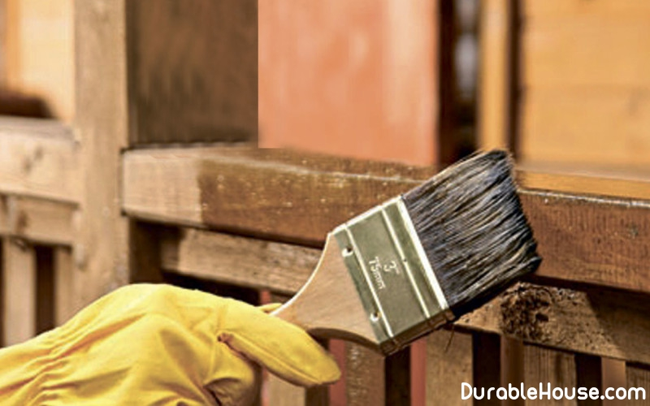

Wood protection
Современные технологические процессы переработки древесины позволяют провести все работы по защите деревянных изделий в промышленных условиях. Но такая продукция дороже необработанной и пока пользуется небольшим спросом. Поэтому рассмотрим, как самим защитить деревянные конструкции нашего дома.
Защита деревянных конструкций начинается уже на стадии приобретения древесины для строительства. Всегда надо покупать хорошо просушенные деревянные изделия. Наличие в них влаги не должно превышать 15–20% – именно такая древесина характеризуется высокой прочностью. Она намного меньше коробится, не подвержена гниению и растрескиванию.
Предварительная сушка
Зачастую пиломатериалы длительно хранятся на открытом воздухе и набирают лишнюю влагу. Поэтому перед использованием их надо просушить. Естественная просушка длится от нескольких недель до нескольких месяцев. Для просушки подойдет любая ровная площадка, которую надо застелить рубероидом. Сверху засыпается слой опилок. Пиломатериалы укладывают на опоры высотой 40–50 см и перекладывают деревянными прокладками толщиной 15–20 мм. Ширина штабеля – 1,2 м (максимум), оптимально – 0,8 м. Высота может быть любой. При укладке штабеля надо обязательно учитывать направление ветра. Штабель древесины укладывается поперек, а не вдоль ветряного потока. Чтобы древесина не покоробилась при сушке, сверху на штабель укладывают что-то тяжелое или стягивают торцы резиновой лентой шириной 40 мм, которую можно вырезать из старой автомобильной камеры. Если штабель расположен не под навесом, то сверху его надо накрыть от дождя.
Обработка защитными составами
Только после сушки можно приступать к обработке древесины различными составами, которые защитят ее от огня, УФ-лучей и биологических вредителей. Такая защита, как правило, состоит из двух слоев грунтовки, которая наносится на чистое дерево, и пленкообразующего состава в качестве финишного покрытия.
Краски
Одним из самых популярных финишных покрытий является краска. Покрывают древесину акриловыми красками на водной основе или масляными. В зависимости от основы краски подбирается грунтовка. Наносить краску следует вдоль волокон древесины. Держите влажной ту область, с которой вы сейчас работаете, и не допускайте перекрытия с теми областями, которые сушатся. Один-единственный слой, обновляемый раз в 1–2 года, сохранит дерево и обеспечит приемлемый внешний вид деревянных конструкций. Итак, краска надежно защищает древесину, такое покрытие долговечно, однако оно полностью скрывает текстуру древесины. Если же планируется сохранить неповторимый рисунок, то надо применять прозрачные материалы, такие как лак, лазурь, пропитки и масла.
Полупрозрачные составы обладают защитными свойствами в гораздо большей степени, чем краски. Во-первых, содержание красящих пигментов в них на порядок меньше, что позволяет им гораздо лучше впитываться в дерево, защищая его от атмосферных воздействий «изнутри»; во-вторых, в них содержится гораздо больше специальных добавок (фунгицидов и т.п.), предотвращающих гниение и разрушение дерева.
Пропитки
В современном строительстве для защиты древесины все больше и больше отдают предпочтение различным пропиткам. Как правило, это многокомпонентный состав, который создает надежную профилактическую защиту здорового дерева, предохраняя его от появления грибка, плесени, насекомых и синевы. Пропитки проникают глубоко внутрь древесины, создавая защитный слой. Также пропитки оттеняют рисунок древесины и делают ее поверхность матовой. Обычно для полноценной защиты достаточно одного слоя пропитки.
При использовании пропитки необходимо четко соблюдать инструкцию по применению, а также не пользоваться пропиткой, предназначенной для наружного применения, для защиты внутренних деревянных конструкций дома. Пропитку надо наносить мягкой кистью, но не валиком. Валик только разбрызгивает смесь и не дает ровного слоя. Пропитка наносится на чистое сухое дерево достаточно быстро. Каждая плоскость должна покрываться непрерывно, иначе, если пропитка на данном участке высохнет раньше, чем на соседнем, в этом месте получится заметный шов. Но делать это нужно аккуратно, чтобы не оставлять необработанных участков. Наносите пропитку по направлению волокон древесины. Старайтесь не брать на кисть слишком много состава и размазывайте случайные капли прежде, чем они засохнут.
Лаки
Для защиты древесины и создания глянцевой поверхности используют лаки.
Лак должен непременно наноситься вдоль волокон древесины, хотя с этим материалом можно не слишком заботиться об аккуратности нанесения. Поскольку большинство лаков абсолютно прозрачны, во время нанесения легко не заметить необработанные области.
Для обеспечения равномерного покрытия поверхности следует организовать в месте работ хорошее освещение и проводить регулярные проверки обработанных участков. Плавно работайте кистью, чтобы слой лака был равномерным. Оботрите первый слой лака, поскольку некоторые типы этого покрытия, особенно на водной основе, имеют свойство растекаться вдоль волокон древесины. Протрите поверхность влажной тряпкой, чтобы стереть пыль, и дайте лаку 2–3 ч высохнуть перед нанесением следующего слоя.
Антисептические растворы
Несмотря на то что в состав большинства пропиток входят антисептики и фунгициды, препятствующие развитию гнили и поражению насекомыми, некоторые деревянные элементы (столбы, лаги и т.д.), которые будут соприкасаться с землей или бетоном, нуждаются в дополнительной защите специальными антисептическими растворами. Антисептики представляют собой бесцветный (иногда со слабым янтарным или зеленоватым оттенком) фунгицидный раствор, предотвращающий гниение. Основная задача таких материалов – впитаться в дерево как можно глубже, поэтому они всегда имеют очень жидкую консистенцию. Поверхностную обработку делают кистями или краскопультом в 2–3 слоя. Более глубокую пропитку можно получить, погружая изделия сначала в горячую (t = 90–95°С), а затем в холодную (t = 20–30°С) ванну с антисептиком: в горячем антисептике из пор древесины уходит излишек воздуха, а при погружении в холодную ванну в порах образуется вакуум и антисептик пропитывает древесину на большую глубину. Такая пропитка просто необходима для древесины, которая будет находиться в земле.
Время пропитки разнится для разных пород дерева. Время и расход раствора, приведенные в инструкции, как правило, относятся к легкопропитываемой древесине. Для защиты умереннопропитываемой древесины эти параметры надо увеличивать в 1,5, а для труднопропитываемой – в 2 раза. В табл. 1 приведено распределение пород древесины по группам пропитываемости.
Воск и масло
Современная химическая защита древесины – это, конечно, хорошо, но как быть тем, кто против использования химии хотя бы в жилом помещении. И здесь на помощь могут прийти натуральные материалы: масло и воск.
Наверное, из натуральных масел для древесины больше подходит льняное масло. Для обработки лучше использовать кипяченое или дважды кипяченое масло, поскольку оно быстрее сохнет и не такое липкое, как сырое. Наносите масло обильно, по направлению волокон, немного как бы втирая его при помощи мягкой кисти, чтобы обеспечить полный охват и проникновение в поверхность. Позвольте маслу немного впитаться, а затем удалите излишки с помощью куска ткани. Оставьте обработанное дерево на полчаса, после чего отполируйте поверхность сухой тряпкой. После обработки маслом рисунок древесины становится особенно насыщенным и как бы несколько влажным. Можно оставить покрытие в таком виде, а можно еще обработать сверху воском. Для этого необходимо приготовить восковую мастику.
Простейшая восковая мастика готовится из воска и скипидара в соотношении 2:1. Берем 100 г воска, 25 г истолченной канифоли и 50 г очищенного скипидара.
На водяной бане расплавляем воск в эмалированной емкости, добавляем канифоль. После растворения воска постепенно добавляем скипидар. Снимаем все с огня, переливаем в жестяную баночку и даем составу остыть. Мастика становится густой и пастообразной.
Мастика наносится на древесину куском ткани. Ее не обязательно наносить по направлению волокон, однако такой способ все же является самым эффективным при отделке деревянных поверхностей. На ткань берется небольшое количество мастики и втирается в дерево, пока не останется отделочного материала. После этого обработанному участку дают немного высохнуть, но не застыть, после чего производится полировка сухой чистой тканью.